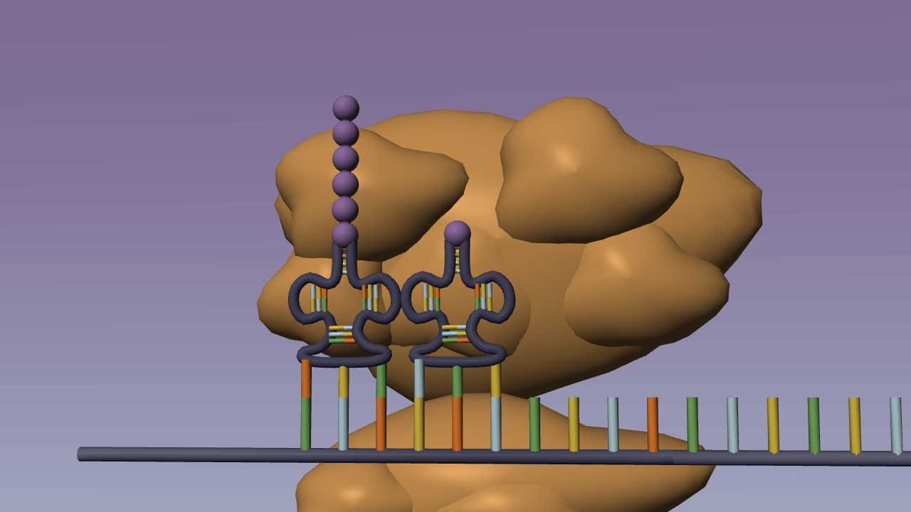
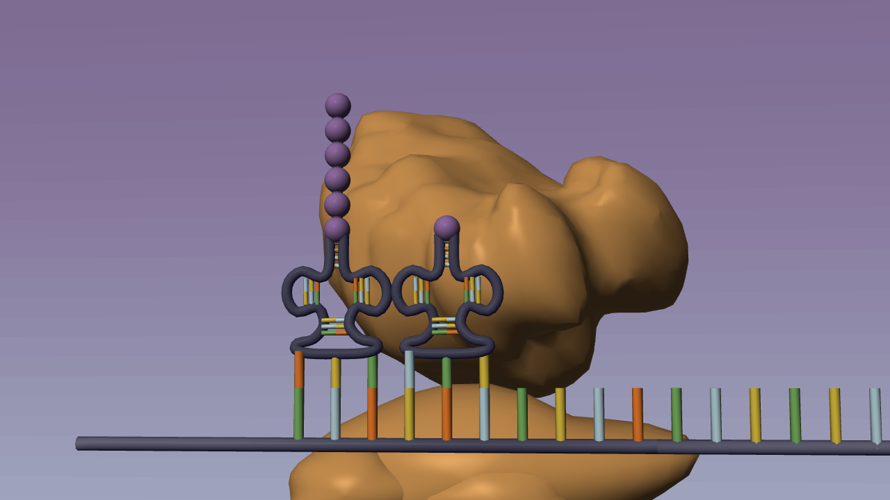
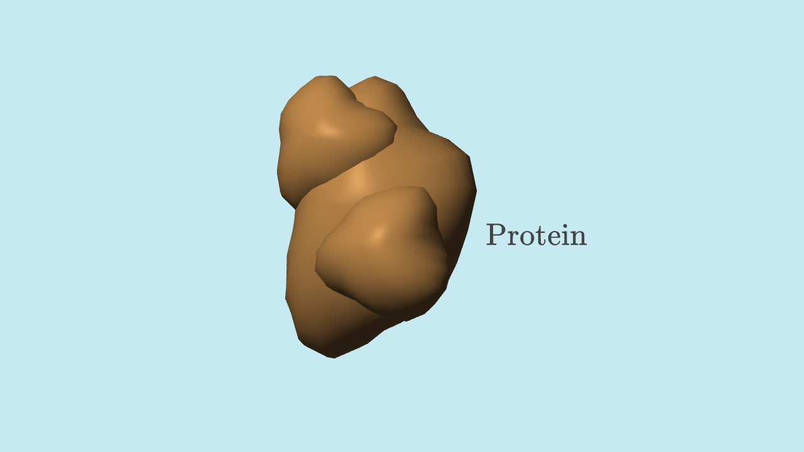
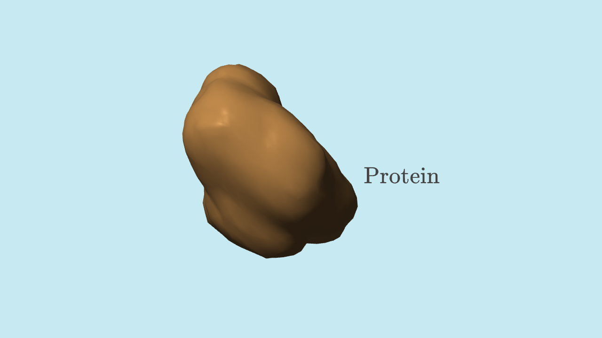

Same DNA film. Smoother molecular models.
Matching native frames, same camera and time. Gold surfaces, purple/cyan atmosphere, animation timing and silent subtitle delivery retained.
Ribosome during translation · 2:02.5


Protein endpoint · 2:41


These are smooth density envelopes, not atomically exact surfaces. The ribosome's small subunit and mechanism remain schematic. Crambin illustrates a folded structure; the nine-residue animation does not simulate synthesis or folding of that sequence. Data: 1CRN and 1JJ2.